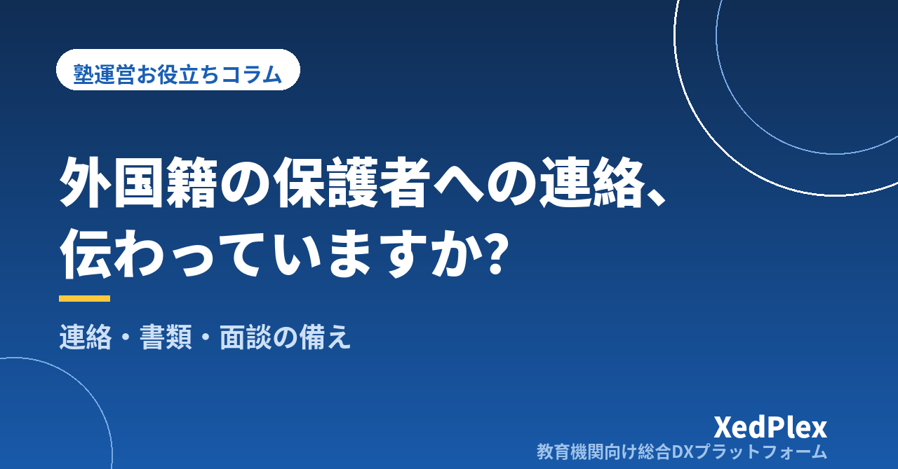

外国籍の生徒・保護者への対応、塾はどう備える？｜連絡・書類・面談で困ることと「やさしい日本語」・多言語の準備

休講のお知らせを送ったのに、その日も生徒が教室に来てしまった。月謝の引き落とし日を説明したつもりが、保護者には伝わっていなかった。面談では保護者がうなずいていたものの、本当に理解してもらえたのか自信がない──。外国籍の生徒や、日本語が母語ではない保護者を受け入れるようになると、こうした「伝わったつもり」のすれ違いに悩む塾長は少なくありません。
大きな塾のように専任の通訳スタッフを置くのは、個人塾では現実的ではありません。それでも、連絡・書類・面談の3つの場面に小さな備えをしておくだけで、すれ違いの多くは防げます。この記事では、外国籍の生徒・保護者への対応で困りやすい場面を整理し、入塾時の確認、やさしい日本語での連絡、書類と面談の工夫、塾全体で続ける仕組みを解説します。
外国籍の生徒・保護者対応で困りやすい3つの場面
困りごとは「言葉が通じない」の一言でまとめられがちですが、場面ごとに原因と対策が異なります。
| 場面 | 起きやすいこと | 主な原因 |
|---|---|---|
| 連絡 | 休講・時間変更・持ち物の連絡が伝わらない。返信が来ない | 文が長い、敬語や漢字が多い、読める手段で届いていない |
| 書類 | 申込書の記入漏れ、規定の誤解、請求金額や支払日への問い合わせ | 専門用語・独特の言い回しが多い、日本の学校・塾の慣習が前提になっている |
| 面談 | 理解したように見えて、後で認識の違いが分かる | 話すスピードと情報量、日本の受験制度の説明不足、記録が残らない |
もうひとつ気をつけたいのが、日本の教育制度そのものの違いです。定期テストと内申（調査書）の関係、高校入試の仕組み、学校行事の多さなどは、保護者が自国で経験してきたものと大きく異なる場合があります。言葉の問題に見えて、実は制度の前提が共有できていないことが原因になっているケースもあります。
入塾時に確認しておきたい4つのこと
対応を考える前に、まずは相手のことを知るところから始めます。体験授業や入塾面談の段階で、次の4点を確認しておくと、その後の連絡の方法を決めやすくなります。体験から入塾までの流れは「体験授業から入塾につながらない塾の共通点」も参考にしてください。
- 保護者が読みやすい言語と文字：日本語は話せても読み書きは苦手、ひらがなは読めるが漢字は難しい、英語なら読める、など。「日本語は大丈夫ですか」ではなく「お知らせは何語で、どんな書き方だと読みやすいですか」と具体的に聞きます。
- 連絡を受け取りやすい手段：メール、アプリ、電話のどれなら確実に届くか。家庭内で連絡を見るのが父母のどちらかも確認しておきます。
- 生徒本人の日本語と学習の状況：来日時期、日本の学校に通った年数、母語での学習歴。日常会話が流ちょうでも、教科で使う言葉（「比例」「要約」「資料から読み取る」など）でつまずいていることはよくあります。学力の把握方法は「塾の入塾時に生徒の学力・つまずきを把握する方法」で解説しています。
- 配慮してほしいこと：宗教上の習慣、食事、長期休暇中の帰国予定など。こちらで推測せず、「配慮が必要なことはありますか」と本人・保護者に聞く形にします。
ポイント：国籍や出身国で対応を決めつけないことが大切です。同じ国の出身でも、日本語の得意さや家庭の状況は一人ひとり違います。確認した内容は生徒の記録として残し、講師全員が同じ前提で対応できるようにしておきましょう。記録の扱いは「塾が守るべき生徒の個人情報管理の基本」もあわせてご覧ください。
連絡の備え：「やさしい日本語」と定型文
多言語に翻訳する前に、まず効果が大きいのがやさしい日本語で書くことです。やさしい日本語とは、日本語が母語でない人にも分かりやすいよう、文を短く、言葉を簡単にした日本語のことで、自治体の防災情報や行政の案内でも活用されています。翻訳ツールにかける場合も、元の日本語がやさしいほど誤訳が減ります。
書き方の5つのルール
- 1つの文に1つの情報：「〜ので、〜ですが、〜ください」とつなげず、文を分けます。
- 日時・金額は数字で、曜日も添える：「来週の火曜」ではなく「10月13日（火）」。
- あいまいな言い方をしない：「なるべく」「〜かと思います」「ご検討ください」は意味が伝わりにくい表現です。
- 敬語をシンプルに：「お越しいただけますでしょうか」より「来てください」。丁寧さは「です・ます」で十分保てます。
- 大事なことを最初に書く：結論→理由→お願いの順にします。
| よくある書き方 | やさしい日本語の例 |
|---|---|
| 台風の接近に伴い、明日の授業は休講とさせていただきますので、ご了承のほどよろしくお願いいたします。 | 10月13日（火）は、塾は休みです。台風が来るからです。授業はありません。 |
| 月謝は毎月27日にご指定の口座より引き落としとなりますので、前日までにご入金をお願いいたします。 | 月謝は毎月27日に、銀行の口座から払います。26日までに、口座にお金を入れてください。 |
翻訳ツールを使うときの注意
翻訳アプリや翻訳サイトは便利ですが、そのまま頼り切るのは危険です。日時・金額・持ち物など間違えると困る情報は、数字や記号で併記し、重要な連絡は「分かりましたか？」と受け取り確認をとるようにします。また、生徒の氏名・成績・家庭の事情などの個人情報を、利用規約を確認していない翻訳サービスに入力するのは避けましょう。
よく送る連絡（休講、時間変更、テスト対策の案内、面談日程、請求のお知らせ）は、やさしい日本語版を定型文として用意しておくと、毎回考えずに済みます。連絡の頻度や種類の整理は「塾の保護者連絡、適切な頻度は？」で詳しく解説しています。
書類の備え：申込書・規定・請求を「読めば分かる」形に
書類は、口頭での説明以上にすれ違いが起きやすい場面です。特に、入塾申込書・塾の規定・請求に関する案内は、お金やトラブル防止に直結するため、優先して見直します。
| 書類 | 工夫の例 |
|---|---|
| 入塾申込書 | 記入欄に記入例を添える。ふりがな欄の意味（読み方を書く欄）を明記する |
| 塾の規定 | 休塾・退塾の申し出期限、欠席時の振替、返金の有無など重要な項目だけを、箇条書きの「要点版」にまとめて別に渡す |
| 料金・請求の案内 | 月謝・教材費・講習費を表で分ける。支払日と支払方法をカレンダーや図で示す |
| 年間予定 | 講習・テスト対策・面談の時期を月ごとの一覧にし、日本の学校行事との関係を一言添える |
書類を渡すときは、署名をもらう前に要点版を一緒に読み合わせ、「質問はありますか」と聞く時間をとります。後で「聞いていない」となりやすいのは、退塾・休塾の期限と、最終月の請求です。規定の作り方は「塾の退塾・休塾のルールと手続きの整え方」、開業時に整えておきたい書類は「個人塾の開業で見落としがちな事務まわりの準備リスト」で紹介しています。
なお、在留資格や各種の公的手続き、税・契約に関わる質問を受けた場合は、塾として判断せず、市区町村の窓口や地域の国際交流協会など専門の相談先を案内するのが安全です。
面談の備え：時間・資料・通訳の考え方
面談は、保護者の不安を直接受け止められる貴重な場です。日本語が母語でない保護者との面談では、次の点を意識します。
- 時間を通常より長めにとる：ゆっくり話し、確認しながら進めるため、普段の1.5倍程度を目安に枠を確保します。
- 資料を事前に渡す：成績や話す内容の要点を前日までに渡しておくと、保護者が翻訳ツールなどで準備できます。
- 話す内容を3つまでに絞る：「今できていること」「課題」「次にやること」の3つにすると、情報量が多すぎず伝わりやすくなります。
- 受験制度は図で説明する：内申点と入試の関係、出願から合格発表までの流れは、言葉だけでは伝わりにくい部分です。1枚の図にしておくと、毎年使い回せます。
- 最後に要点を書面で渡す：決まったことと次回までにやることを、やさしい日本語で短くまとめて渡します。
通訳が必要な場合、生徒本人に通訳を頼むのはできるだけ避けたいところです。成績や課題について、子どもが親に説明する形になると、正確に伝わらなかったり、本人に負担がかかったりします。保護者の希望を聞いたうえで、日本語が分かる家族や知人の同席、自治体や国際交流協会などが案内している通訳・相談の仕組みがあるかを確認しておくとよいでしょう。面談準備の基本は「保護者面談の準備を1時間で終わらせる方法」、受験期の情報共有は「受験期の保護者との情報共有、塾はどう進める？」で解説しています。
塾全体で続けるための仕組みづくり
こうした備えは、塾長ひとりの頑張りに頼ると続きません。最後に、塾の仕組みとして定着させるためのポイントを整理します。
- 生徒ごとに「伝え方メモ」を残す：保護者が読みやすい言語、連絡手段、配慮事項を生徒の記録に書いておき、講師が誰でも確認できるようにします。
- 定型文と書類の要点版を1か所にまとめる：講師が個別に作った文面がばらばらに送られると、かえって混乱のもとになります。
- 教科の用語集を少しずつ作る：生徒がつまずいた言葉（「垂直」「分母」「主語」など）を、やさしい言い換えと一緒にためていくと、他の生徒にも使えます。
- 連絡が「読まれたか」を確認できる手段を選ぶ：電話や口頭だけに頼らず、記録が残り、後から見返せる手段を中心にすると、行き違いの確認がしやすくなります。保護者連絡のツール選びは「保護者向け連絡アプリ、塾に必要な機能は？」を参考にしてください。
外国籍の生徒・保護者への対応で工夫したことは、実は日本人の保護者にとっても「分かりやすい塾」につながります。短く、数字で、要点を先に。まずは次に送る休講のお知らせを、やさしい日本語で書き直すところから始めてみてください。
この記事を書いた運営より
私たちは、個人経営・小規模の学習塾向けに、生徒管理・QRコードでの入退室記録・月次請求・保護者へのLINE/メール通知・AIによる学習支援までをひとつにまとめた教育機関向け総合DXプラットフォーム「XedPlex（ゼドプレックス）」を開発・提供しています。初期費用は0円、料金は生徒1名あたり月額300円（税込）から。生徒50名の塾なら月15,000円（税込）です。全国8つの教室で導入されており、導入塾には紹介ホームページの無料作成も行っています。機能の詳細説明はこちら。
XedPlexは日本語・英語・中国語の多言語に対応しており、外国籍のご家庭を受け入れている塾でもご利用いただけます。
XedPlexの詳細を見る